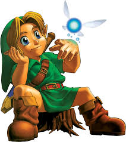
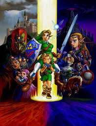
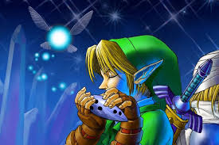

Quando criança em The Legend of Zelda: Ocarina of Time, Link vive na floresta Kokiri, mas é diferente das outras crianças porque não possui uma fada no início. Ele é visto como alguém fora do comum até receber a visita de Navi, que se torna sua parceira. A Grande Árvore Deku o escolhe para salvar Hyrule e o envia em uma missão para reunir as pedras espirituais. Durante essa jornada, Link ainda criança explora o mundo, enfrenta pequenos desafios e começa a descobrir seu papel no destino do reino.

No Templo do Tempo, ele puxa a Master Sword e acaba selado por 7 anos. Quando acorda, o mundo já foi dominado por Ganondorf. Já adulto, Link vira um herói silencioso: ele atravessa os templos, desperta os Sábios e vai restaurando Hyrule aos poucos. No final, ele enfrenta Ganondorf e vence, trazendo paz ao reino — depois de carregar sozinho um destino que ele nunca escolheu.

Depois da vitória, acontece o ponto mais importante da história dele: ele volta ao passado. A Zelda usa a Ocarina para mandá-lo de volta à infância, para ele recuperar os anos “perdidos” quando foi selado como adulto. Mas aqui tem o detalhe pesado: mesmo voltando no tempo, ele não esquece o que viveu como adulto. Ele carrega aquela experiência sozinho, enquanto o mundo continua como se aquela versão dele nunca tivesse existido. Ele entrega a Master Sword de volta ao pedestal e retorna a ser uma criança na floresta Kokiri, como se a aventura adulta tivesse sido apagada do mundo — mas não dele. No fim, ele volta a um ponto de início… só que já não é mais a mesma pessoa.
Copyright - Gustavo Camargo Martins 2026